Learning Objectives
After completing this lesson, you’ll be able to:
- Open a workspace to compare using the Compare tool.
- View the list of changes using the Compare tool and find them on the canvas.
- View parameter changes using the Compare tool.
- Merge selected changes using the Compare tool.
Instructions
In this lesson, you will:
- Scroll down to read the text below.
- Complete the exercise by following the steps.
- Complete the Quiz toward the bottom of the page.
- Optional: Let us know if you found this lesson relevant to your role by filling out the survey at the bottom of the page.
- Click 'Next' to mark the lesson complete.
Resources
- Starting workspace
- If you are taking a Safe Software-hosted training course, you can also find this workspace on your training machine: C:\FMEData\Workspaces\UseDataIntegrationBestPractices\compare-workspaces-v1.fmw
- Updated workspace
- C:\FMEData\Workspaces\UseDataIntegrationBestPractices\compare-workspaces-v2.fmw
- Complete workspace
- C:\FMEData\Workspaces\UseDataIntegrationBestPractices\compare-workspaces-v3.fmw
- CaseLocationsDetails_2017_XLS.zip
- C:\FMEData\Resources\311\CaseLocationsDetails_2017_XLS.zip
- LocalAreas.kml
- C:\FMEData\Data\Boundaries\LocalAreas.kml
- 311-summary.csv
- C:\FMEData\Resources\311\311-summary.csv
What is the Compare Tool?
One of FME’s strengths is its ability to build complex solutions that apply in multiple departments of an organization. Colleagues often share workspaces and make iterations on those workspaces. Inheriting a workspace from a colleague or working on a workspace together has often resulted in sending files and screenshots back and forth. The Compare tool saves time and improves this collaborative experience.
The Compare tool in FME allows you to compare two workspaces simultaneously. These differences are represented visually, allowing you to compare the two workspaces efficiently. You can copy over elements into the Editable canvas to make changes based on the differences. If you want to integrate Git into your Workbench comparison workflow, you can do so on the command line, TortoiseGit, and Sourcetree to interface directly with the Compare tool.
Where Can I Find the Compare Tool?
You can access the Compare tool through File > Compare Files.
This will open the Compare dialog. You can select two workspaces or exported custom transformers you want to compare.
How Does the Compare Tool Work?
Compare has a left (Editable) and right (Read-Only) canvas with edit controls in the middle toolbar. Toggle the Help icon in the toolbar to learn more about using the Compare tool.
View Workspace Differences
Canvas objects are color-coded to represent their status:
- Blue highlights on the Editable canvas represent all elements present only on the left.
- Purple highlights on the Read-Only canvas represent all elements present only on the right.
- Yellow highlights appear on both canvases and represent objects present in both canvases, but with differences.
- Unhighlighted objects appear on both canvases and are identical.
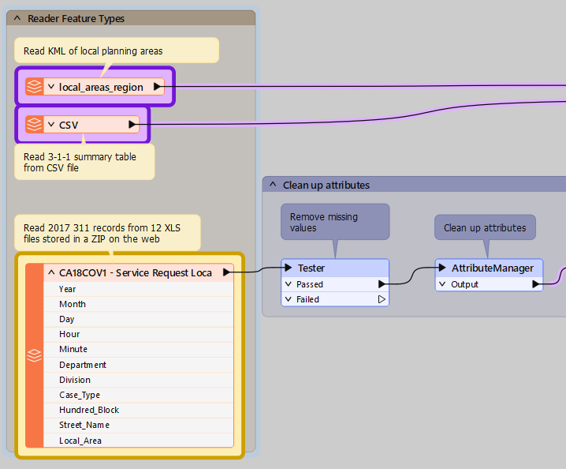
Changes are also displayed below the canvas in a list:
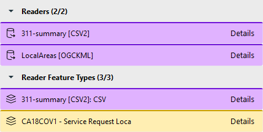
You can filter this list By Type of Component or By Component Name using the Filter button.
Make Changes to Workspaces
You can review the changes and choose which ones to keep. You can also open individual objects and click the Edit... button to selectively change objects on the Editable canvas.
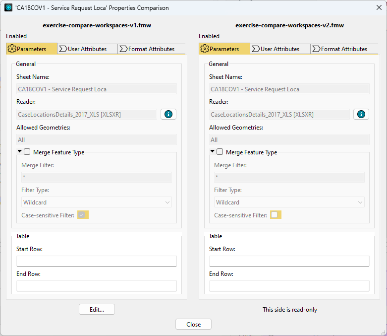
If you want to apply all the changes from an object on the Read-Only canvas to the Editable workspace, click an object and choose Copy to Left. This will copy all differences over and immediately re-compare the workspaces.
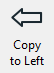
Exercise

Sven created a workspace to do attribute cleanup on 3-1-1 call data, the non-emergency number that municipalities in Canada and the United States use to manage service requests. A few weeks later a colleague modified his workspace to summarize the call records and join them to spatial data, adding feature types and changing transformers. Sven now has two versions and needs to reconcile them into one shared workspace.
In this exercise, you will:
- Compare two versions of a workspace with the Compare tool.
- Identify which transformers and parameters changed between the versions.
- Merge the changes from the read-only workspace into the editable workspace.
1) Open Starting Workspace
- Start FME Workbench (2026.2 or later).
- Open your starting workspace from C:\FMEData\Workspaces\UseDataIntegrationBestPractices\compare-workspaces-v1.fmw.
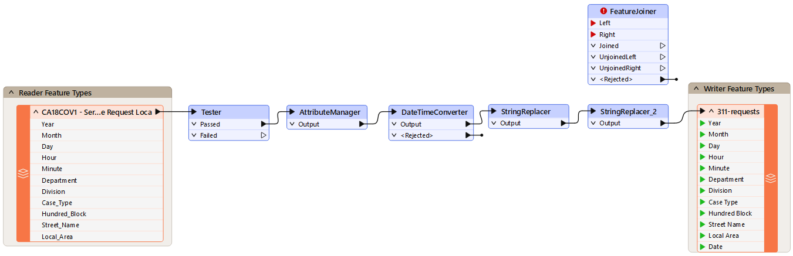
The Compare tool loads two workspaces side by side so you can see what your colleague changed. The workspace you load as editable is the one you will merge changes into.
- Click File > Compare Files.
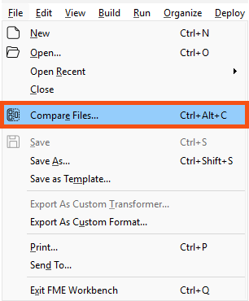
- Configure the following parameters:
- Editable (left): compare-workspaces-v1.fmw (C:\FMEData\Workspaces\UseDataIntegrationBestPractices\compare-workspaces-v1.fmw)
- Read-only (right): compare-workspaces-v2.fmw (C:\FMEData\Workspaces\UseDataIntegrationBestPractices\compare-workspaces-v2.fmw)
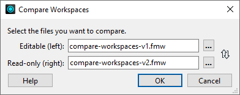
- Click OK.
- The workspaces open in the Compare tab.
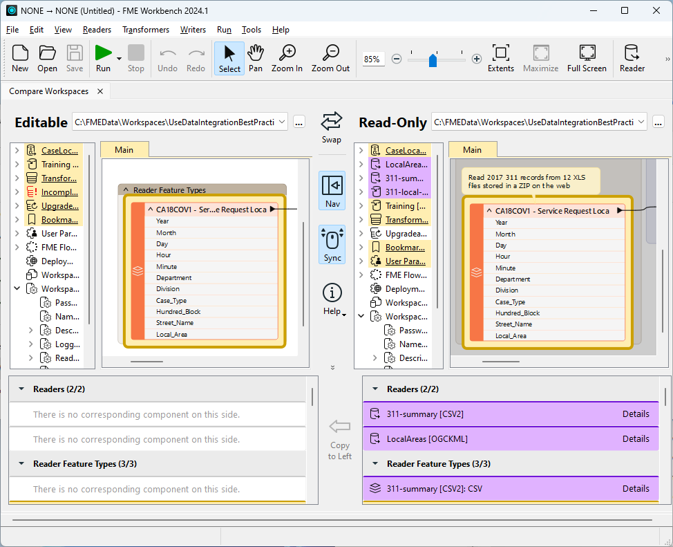
3) Find a Specific Change
The differences appear in a list below the canvases, grouped by the type of object that changed. Yellow marks an object that exists in both workspaces but differs between them.
- In the list of differences, under Transformers, find the modified FeatureJoiner.
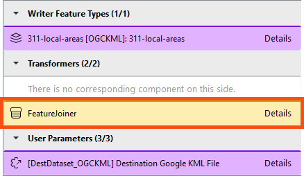
- Click the FeatureJoiner once.
- Both canvases highlight the transformer, so you can see it in context.
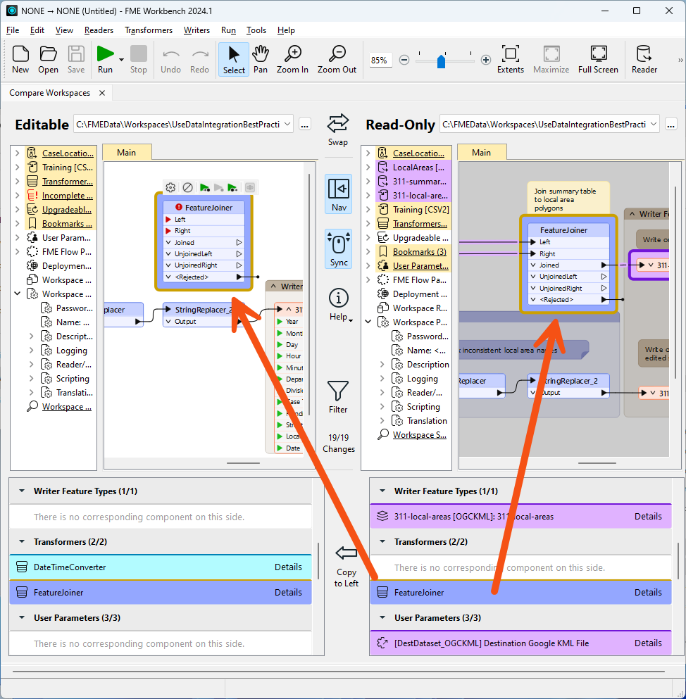
4) View Changed Parameters
Opening a difference shows that object's parameters from both workspaces side by side. This is where you confirm exactly what changed before you decide to keep it.
- In the list of differences, double-click the FeatureJoiner.
- The 'FeatureJoiner' Properties Comparison dialog opens.
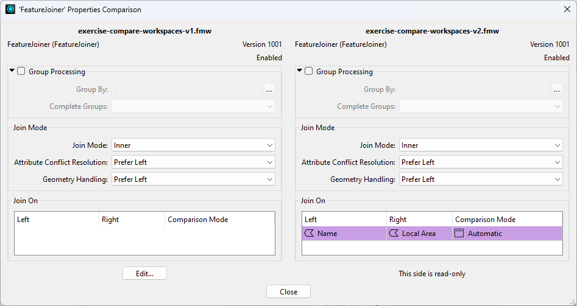
- Confirm the FeatureJoiner is unconfigured in the v1 workspace and configured in the v2 workspace.
- The v2 workspace joins tabular CSV data of 3-1-1 call records to local planning area polygons read from a KML file. The shared key is the name of the local planning area, stored in the Name and Local Area attributes respectively.
- Click Close.
5) Select Differences to Copy
The remaining differences all belong to the new workflow that summarizes calls by local area, so you can accept them together. Copying to the left applies the read-only workspace's changes to your editable workspace.
- Browse the remaining differences.
- On the Read-Only canvas, select all the objects.
- Click and drag around the objects, or select a single change in the list of differences and press Ctrl+A.
- Between the two lists of differences, click Copy to Left.
- FME asks you to confirm that you want to merge the changes.
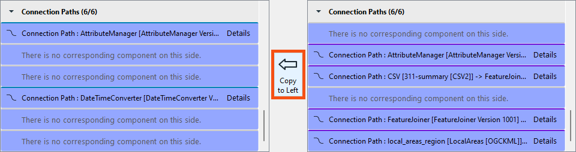
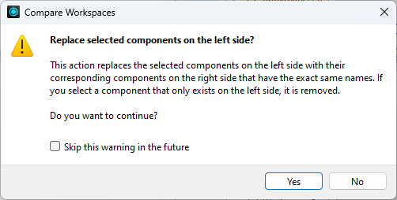
- Read the message telling you that Copy to Left does not change runtime order.
- You can change the runtime order in the Navigator if you need to.
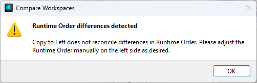
- Confirm the Editable canvas now shows the merged workspace.
- Save the workspace.
You have now compared two versions of a workspace, confirmed what changed in the FeatureJoiner, and merged the second version's changes into the first. Comparing the two versions this way replaces sending files and screenshots back and forth.
Tips and Tricks
- You could also compare the changes, confirm they are all correct, delete the v1 workspace, and continue using v2. The method you choose depends on whether you want to accept all changes or just some of them, which creates a fork or parallel development path, and on whether you maintain separate copies of similar workspaces in your organization.